Responde por mensaje privado, de forma automática y segura, a quienes comentan tus publicaciones de Instagram. Todo funciona en tu propio computador.
Social Desk es una herramienta local de un solo usuario. Este manual no está afiliado a Meta, Instagram ni Facebook. Los nombres de botones del panel de Meta cambian con frecuencia: sigue siempre la documentación oficial enlazada en cada capítulo.
Una herramienta que vigila los comentarios de tus publicaciones de Instagram y, cuando alguien escribe una palabra clave, le responde por mensaje privado.
Seguramente has visto publicaciones que dicen «comenta GUÍA y te la envío por mensaje». Social Desk hace ese trabajo por ti. Tú decides qué publicaciones vigilar, qué palabras activan la respuesta y qué mensaje se envía. La app se encarga de revisar los comentarios, preparar el mensaje y enviarlo respetando las reglas de Meta.
Todo funciona en tu propio computador. No hay servidores en la nube ni cuentas de Social Desk. Tus tokens y tus datos se quedan en tu equipo, cifrados.
Este es el camino que sigue cada comentario, de principio a fin:
Además del vigilante automático (el monitoreo), existe un camino manual: la Revisión pendiente. Sirve para revisar comentarios que ya existían antes de activar una automatización y elegir, uno por uno, cuáles responder.
Social Desk usa la función oficial de Meta llamada respuesta privada (private reply). Según la documentación oficial de Meta, estas son sus reglas:
Estas reglas son de Meta, no de la app. Meta puede cambiarlas. Si algo de este manual no coincide con lo que ves, la documentación oficial de Meta manda.
Meta recomienda avisar a las personas cuando interactúan con una respuesta automática, y en algunos lugares la ley lo exige. Un texto como «Este es un mensaje automático de @tu_cuenta» basta.
Lo que necesitas tener listo y lo que debes saber antes de instalar.
| Necesitas | Detalle |
|---|---|
| Un computador propio | Linux o macOS funcionan directamente. En Windows, usa WSL o Git Bash (ver capítulo 3). Debe quedar encendido mientras quieras que la app responda. |
| Node.js 24.21 o superior | Es el programa que ejecuta la app. Se instala una sola vez (capítulo 3). |
| Una cuenta profesional de Instagram | De tipo Empresa o Creador. Las cuentas personales no funcionan con la API de Meta. La cuenta debe ser pública. |
| Una cuenta de desarrollador de Meta | Gratuita. Se crea con tu cuenta de Facebook (capítulo 4). |
| Una app de Meta | No es una app que publiques: es el «registro» que Meta usa para darte permisos. Se crea en el panel de apps (capítulo 4). |
| Un token de acceso | Una clave larga que Meta te entrega. Se pega una sola vez en Social Desk. |
| Solo para Facebook Login | Una página de Facebook vinculada a tu cuenta profesional de Instagram (capítulo 5). |
Hay dos caminos para conectar tu cuenta. Elige uno:
| Instagram Login (recomendado) | Facebook Login | |
|---|---|---|
| Necesita página de Facebook | No | Sí, vinculada a la cuenta de Instagram |
| Inicias sesión con | Tu usuario de Instagram | Tu usuario de Facebook |
| Token que pegas en la app | Token de usuario de Instagram | Token de usuario de Facebook (la app obtiene el de la página) |
| Servidor de Meta | graph.instagram.com | graph.facebook.com |
| Capítulo | Capítulo 4 | Capítulo 5 |
Social Desk es una herramienta local de un solo usuario. Está pensada para que tú administres tus propias cuentas (o las que gestionas directamente), desde tu computador.
localhost). No se puede abrir desde otro equipo ni desde el celular por internet.La app viene en modo prueba (Dry Run) desde la primera vez que la abres, y el monitoreo arranca apagado en cada reinicio. Ojo: el modo que elijas (prueba o real) se conserva entre reinicios. Nada se envía de verdad hasta que tú enciendas, de forma explícita y con confirmación, varios interruptores. El capítulo 14 explica cuáles.
Se hace una sola vez. Necesitarás abrir una terminal (la ventana donde se escriben comandos).
¿Cómo abrir una terminal? En macOS, busca «Terminal» en Spotlight. En Linux, presiona Ctrl+Alt+T en la mayoría de sistemas. En Windows, abre «Ubuntu (WSL)» o «Git Bash». Copia los comandos tal cual y presiona Enter después de cada uno.
node --versionv24.21.0 o un número mayor. Si sale un número menor, la app no arrancará: usa el almacenamiento integrado de Node que solo existe desde esa versión.social-automation) en tu computador.cd ~/social-automationnpm installnpm run buildPara el uso diario, arranca la app con:
npm startCuando la terminal muestre un mensaje como Local app listening on http://127.0.0.1:3000, abre tu navegador en:
http://localhost:3000Existe también un modo de desarrollo, más lento pero que no necesita npm run build:
npm run devSi el puerto 3000 ya está ocupado por otro programa, elige otro con la variable PORT:
PORT=3310 npm startY abre entonces http://localhost:3310.
Vuelve a la terminal donde se está ejecutando y presiona Ctrl+C. Al detenerla, el monitoreo se apaga. La próxima vez que arranques tendrás que encenderlo otra vez.
npm start usa una sintaxis de Linux/macOS. En Windows ejecútalo dentro de WSL o Git Bash. Si no sabes cómo, pide ayuda a alguien de confianza.Todo se guarda en la carpeta data/, dentro de la carpeta de la app:
| Archivo | Qué contiene |
|---|---|
data/social-automation.sqlite | La base de datos: conexiones (con el token cifrado), cuentas, publicaciones, automatizaciones, comentarios analizados, cola e historial. |
data/vault.key | La llave que cifra y descifra tus tokens. Sin ella, los tokens guardados no se pueden leer. |
data/.application-owner.json | Un candado que evita que se abran dos copias de la app a la vez. |
Usuarios avanzados: la variable LOCAL_SOCIAL_DATA_DIR permite usar otra carpeta de datos. Al arrancar, la app restringe los permisos de la carpeta y de la llave para que solo tu usuario del sistema pueda leerlas.
data/vault.key.data/ completa (ni por correo, ni en la nube, ni en un repositorio).Quien tenga la base de datos y la llave puede leer tus tokens y actuar en tu cuenta.
data/ completa (base de datos y vault.key juntas) a un lugar privado, por ejemplo un disco externo cifrado.La base de datos sin su llave no sirve, y la llave sola tampoco. Guárdalas siempre juntas. Si pierdes vault.key, la app se niega a arrancar (nunca crea una llave nueva a escondidas ni borra tus datos). En ese caso, restaura la llave desde tu copia; si la perdiste del todo, mueve la carpeta data/ a otro lugar, arranca de nuevo y vuelve a crear las conexiones con tokens nuevos.
Antes de instalar una versión nueva de Social Desk, haz siempre una copia de data/. Algunas versiones actualizan la estructura de la base de datos la primera vez que arrancan.
El camino recomendado: no necesitas página de Facebook. Al final tendrás un token de Instagram válido por 60 días.
Meta modifica su panel de desarrolladores con frecuencia. Los pasos están escritos según lo que debes lograr, con los nombres que usa la documentación oficial. Si un botón tiene otro nombre, busca la opción equivalente. Este manual no incluye capturas del panel de Meta para no mostrarte pantallas que pueden estar desactualizadas.
Según Meta, los casos de uso no se pueden quitar después de crear la app. Si te equivocas, es más sencillo crear otra app. Meta limita a 15 el número de apps en las que puedes ser administrador o desarrollador si no tienes un negocio verificado.
instagram_business_basic — leer el perfil y las publicaciones.instagram_business_manage_comments — leer comentarios, enviar respuestas privadas y responder públicamente.instagram_business_manage_messages — mensajería de Instagram.La página oficial de respuestas privadas lista instagram_business_basic e instagram_business_manage_comments para Instagram Login. Añadimos instagram_business_manage_messages porque la API de mensajes la exige para enviar mensajes; tenerla evita sorpresas.
La documentación oficial actual indica agregar la cuenta e iniciar sesión, y que se gestionan en «Roles de la app». No detalla en qué pantalla de Instagram se acepta una invitación de evaluador. Si la cuenta queda «pendiente», consulta la ayuda oficial de Meta para aceptar la invitación.
¿Cómo luce un token? Es una cadena larga de letras y números, sin espacios. En este manual lo representamos como TU_TOKEN. Nunca lo publiques ni lo pegues en un chat.
El token da acceso a tu cuenta de Instagram con los permisos que aceptaste. Trátalo como una contraseña. En Social Desk se pega en un campo oculto y, una vez guardado, la app no vuelve a mostrarlo nunca.
instagram_business_basic. Un token que no se renueva en 60 días caduca y ya no se puede renovar.Usuarios avanzados: Meta también ofrece el punto de conexión GET https://graph.instagram.com/refresh_access_token con grant_type=ig_refresh_token. Ese método pone el token en la dirección web; si lo usas, no lo hagas desde el navegador (quedaría en el historial).
Anota en tu calendario un recordatorio a los 50 días de generar el token. Social Desk no te avisa del vencimiento: simplemente dejará de funcionar y la conexión aparecerá como Token inválido. La herramienta oficial Depurador de tokens de acceso de Meta muestra la fecha de vencimiento de un token.
refresh_access_token: developers.facebook.com/documentation/instagram-platform/reference/refresh_access_tokenaccess_token: developers.facebook.com/documentation/instagram-platform/reference/access_tokenÚsalo si tu cuenta de Instagram ya está vinculada a una página de Facebook y prefieres trabajar con tu usuario de Facebook.
Según la revisión de apps de Meta, una app usa Facebook Login o Instagram Login, pero no ambos. Si ya creaste una app para el capítulo 4, crea una app distinta para este camino.
instagram_manage_comments y la tarea Mensajes permite conceder instagram_manage_messages.Solicita estos permisos al generar el token:
| Permiso | Para qué sirve |
|---|---|
instagram_basic | Leer el perfil y las publicaciones de la cuenta de Instagram. |
instagram_manage_comments | Leer comentarios, enviar respuestas privadas y responder públicamente. |
instagram_manage_messages | Mensajería de Instagram. |
pages_show_list | Listar tus páginas (la app las usa para descubrir la cuenta de Instagram vinculada). |
pages_read_engagement | Exigido por Meta para respuestas privadas y moderación de comentarios. |
ads_management y ads_read | Solo si tu rol en la página se otorgó a través del administrador comercial (Business Manager). |
Las páginas de Meta no coinciden del todo. La guía de respuestas privadas de la plataforma de Instagram pide instagram_basic, instagram_manage_comments y pages_read_engagement. La guía equivalente de la plataforma de Messenger pide además pages_messaging, un token de página con la tarea de mensajes, la función Human Agent y acceso avanzado. Si Meta rechaza los envíos por permisos, añade pages_messaging y revisa ambas guías.
Social Desk necesita un token de usuario de Facebook. Al seleccionar la cuenta, la app obtiene sola el token de la página vinculada y lo guarda cifrado.
TU_TOKEN.Puedes comprobar que funciona con la consulta me/accounts: debe devolver tu página. Con el ID de la página, la consulta {id-de-la-página}?fields=instagram_business_account devuelve tu cuenta de Instagram. Social Desk hace estas dos consultas por ti en el paso «Probar y descubrir».
Los tokens de usuario y de página predeterminados son de corta duración (expiran en horas). Para no tener que repetir el proceso a cada rato:
GET https://graph.facebook.com/{versión}/oauth/access_token usando grant_type=fb_exchange_token, el ID de la app, el secreto de la app y el token corto./{id-de-usuario}/accounts) con un token de usuario de larga duración, los tokens de página que recibes no tienen fecha de vencimiento; solo expiran o se invalidan en ciertas condiciones que Meta describe en su guía de errores de tokens (verifica en la documentación oficial cuáles son).Social Desk hace el paso 2 por ti: si pegas un token de usuario de larga duración, el token de página que obtiene al seleccionar la cuenta será de larga duración.
El canje del paso 1 requiere el secreto de la app. Meta advierte que esa llamada debe hacerse en un servidor y que el secreto nunca debe compartirse ni exponerse. Si no te sientes cómodo haciéndolo, pide ayuda a una persona técnica de confianza. Social Desk nunca te pedirá el secreto de la app.
Con el Depurador de tokens de acceso puedes comprobar cuándo vence un token y qué permisos tiene, antes de pegarlo en la app.
me/accounts, instagram_business_account): developers.facebook.com/documentation/instagram-platform/instagram-api-with-facebook-login/get-startedPara usar Social Desk con tu propia cuenta no necesitas la revisión de Meta. Para atender cuentas de otras personas, sí.
| Modo desarrollo | Modo Live (en vivo) | |
|---|---|---|
| Quién puede usarla | Solo personas con un rol en la app: administradores, desarrolladores y evaluadores. | Cualquier persona, pero solo con los permisos aprobados en la revisión. |
| Estado inicial | Todas las apps nuevas empiezan aquí. | Solo debe activarse al terminar el desarrollo y la revisión. |
| Visibilidad | La app no aparece en búsquedas públicas. | Se puede encontrar públicamente. |
| Tu situación | Nivel de acceso | Revisión de la app |
|---|---|---|
| Solo uso mi propia cuenta o una que administro | Estándar | No requerida |
| Quiero atender las cuentas de mis clientes u otras empresas | Avanzado | Requerida (y verificación del negocio) |
Para atender cuentas de otras personas, Meta exige que la app supere la revisión de la app (App Review) y que esté conectada a un negocio verificado. Además, Meta solo permite añadir como evaluador a alguien que sea tu empleado o con quien tengas un acuerdo para probar la app. No uses roles de evaluador como atajo para atender clientes.
Si algún día necesitas acceso avanzado, la revisión pide, entre otras cosas:
Social Desk funciona solo en tu computador (localhost) y no tiene un botón de inicio de sesión de Meta. Meta rechaza las solicitudes que sus revisores no pueden probar. Hoy, la app no está preparada para pasar la revisión de Meta: úsala solo con cuentas propias o que administras, con tu app en modo desarrollo.
Se hace en el administrador comercial de Meta, desde la configuración básica de la app (Configuración > Básica > Verificación). Si la app solo la usan personas con rol en ella, Meta indica que no necesitas completar la verificación.
| Rol | Qué puede hacer |
|---|---|
| Administrador | Todo: cambiar ajustes, restablecer el secreto, asignar roles, eliminar la app. |
| Desarrollador | Cambiar ajustes técnicos y probar todos los permisos en desarrollo. |
| Evaluador | Conceder a la app cualquier permiso en desarrollo, sin cambiar ajustes. |
Según Meta, la mayoría de apps no vinculadas a un negocio verificado pueden tener hasta 50 evaluadores.
Conoce las partes de la pantalla antes de configurar nada.
Al abrir http://localhost:3000 verás la pantalla Resumen. Mientras no hayas terminado la configuración, aparece el panel Primeros pasos con cuatro tareas.
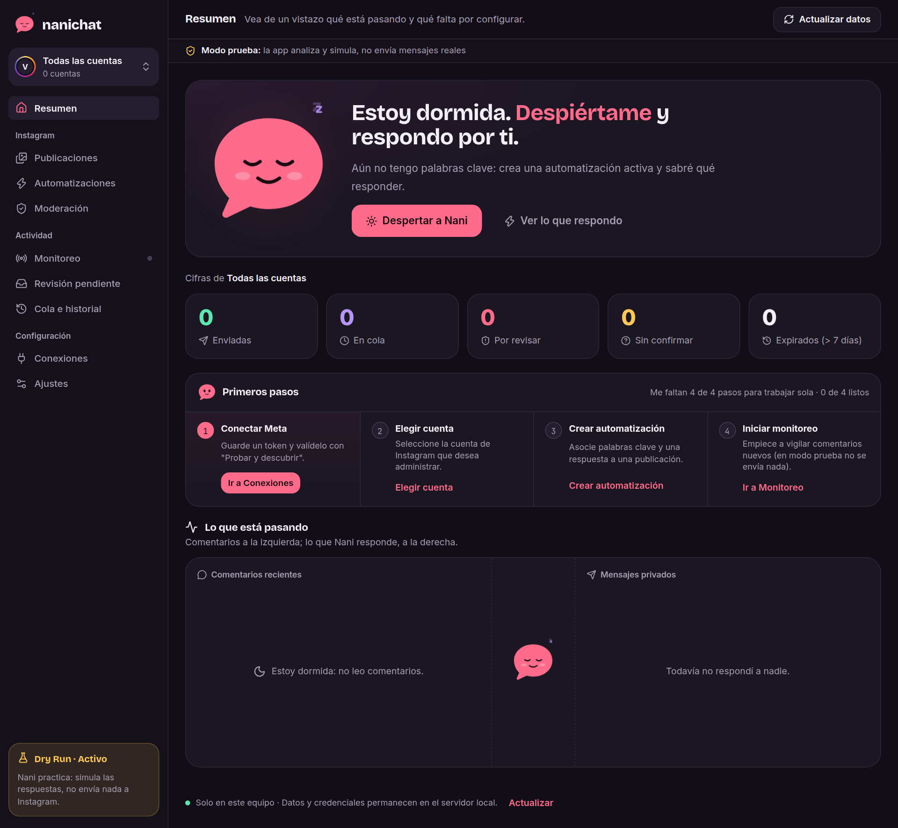
Arriba está el nombre Social Desk · Operación local. Debajo, las ocho secciones:
| Sección | Para qué sirve |
|---|---|
| Resumen | Ver de un vistazo qué está pasando y qué falta por configurar. |
| Conexiones | Guardar tu token de Meta y elegir la cuenta de Instagram (capítulo 8). |
| Publicaciones | Ver las publicaciones de la cuenta elegida (capítulo 9). |
| Automatizaciones | Crear las reglas de palabras clave y respuestas (capítulo 10). |
| Monitoreo | Encender o apagar la vigilancia de comentarios nuevos (capítulo 12). |
| Revisión pendiente | Analizar comentarios anteriores y elegir cuáles responder (capítulo 11). |
| Cola e historial | Ver qué pasó con cada respuesta (capítulo 13). |
| Ajustes | Modo de envío, importación de configuración y protecciones (capítulo 15). |
Al pie de la barra lateral verás «Solo en este equipo»: recuerda que todo ocurre en tu computador.
Una franja de color te recuerda siempre en qué modo estás. No la ignores.
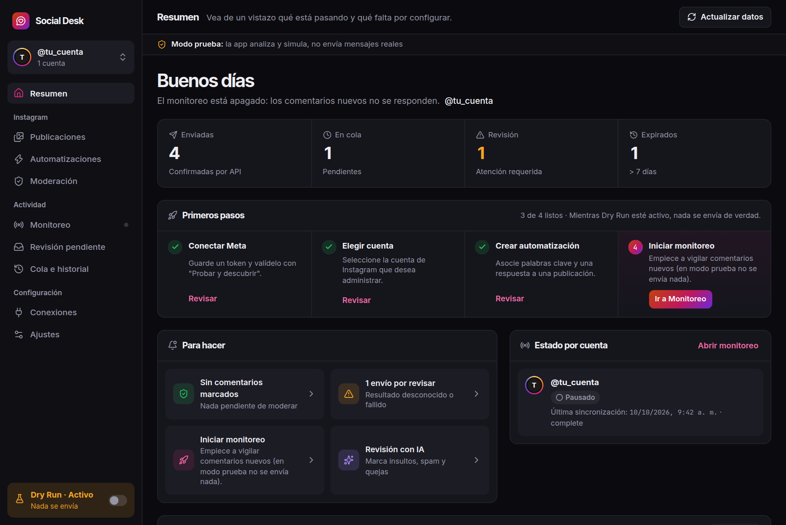
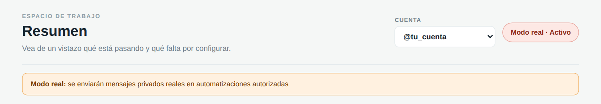
Cuatro tareas en orden: Conectar Meta, Elegir cuenta, Crear automatización e Iniciar monitoreo. El contador muestra cuántas están listas (por ejemplo «2 de 4 listos»). La tarea siguiente tiene el botón destacado. El panel desaparece cuando completas las cuatro.
| Indicador | Qué cuenta |
|---|---|
| Cuentas | Cuentas seleccionadas (según el filtro de cuenta). |
| En cola | Elementos esperando envío: «En cola» y «Falló (reintentable)». |
| Enviadas | Mensajes que Meta aceptó («Enviado»). |
| Revisión | Elementos que requieren tu atención: «Resultado desconocido» y «Falló (definitivo)». |
| Expirados | Comentarios que superaron la ventana de 7 días. |
Una tabla con cada cuenta: estado (Validada, No validada o Pausado), última sincronización, cobertura de la última revisión y la última incidencia registrada. El enlace Abrir monitoreo → lleva a la sección de monitoreo.
Tres tarjetas al final: Administrar conexiones, Configurar automatizaciones y Revisar comentarios. El botón Actualizar datos recarga el resumen.
La interfaz se adapta a ventanas estrechas: la navegación y los paneles se reorganizan en una sola columna.
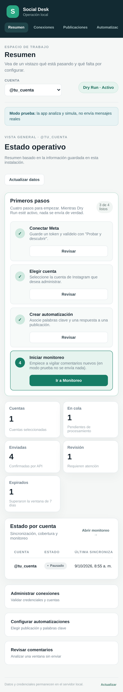
Una conexión guarda tu token de Meta, cifrado. Después la validas y eliges la cuenta de Instagram que vas a administrar.
Ve a Conexiones. Si aún no tienes ninguna, verás el mensaje «Aún no hay conexiones» y el botón Crear la primera conexión, que te lleva al formulario.
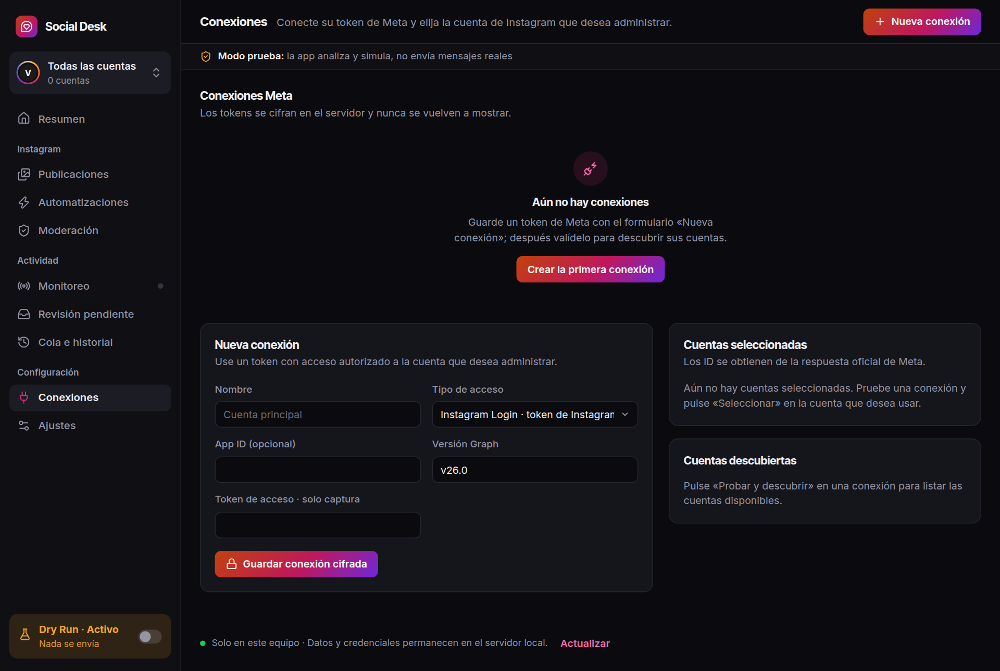
Completa el formulario Nueva conexión:
| Campo | Qué escribir |
|---|---|
| Nombre | Un nombre para reconocerla, por ejemplo «Cuenta principal». |
| Tipo de acceso | Instagram Login · token de Instagram si seguiste el capítulo 4, o Facebook Login · token de usuario y página vinculada si seguiste el capítulo 5. |
| App ID (opcional) | El identificador de tu app de Meta. Puedes dejarlo vacío. Nunca pegues aquí el secreto de la app. |
| Versión Graph | La versión de la API de Meta, con el formato v26.0. La app propone v26.0. Si Meta la rechaza, usa la versión vigente que indique la documentación oficial. |
| Token de acceso · solo captura | Pega aquí TU_TOKEN. El campo oculta el texto mientras escribes. |
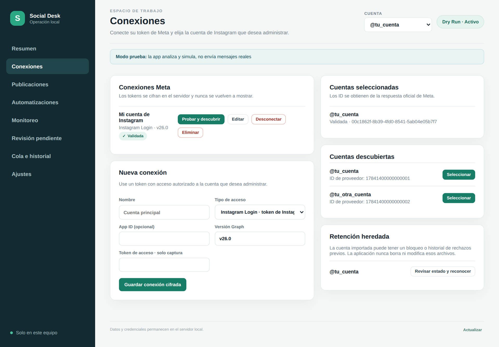
Después de guardarlo, el token nunca se vuelve a mostrar: ni en pantalla, ni en el navegador, ni en las respuestas de la app. Se guarda cifrado en tu computador. Si lo necesitas de nuevo, genera uno nuevo en Meta.
@tu_cuenta) con su ID de proveedor.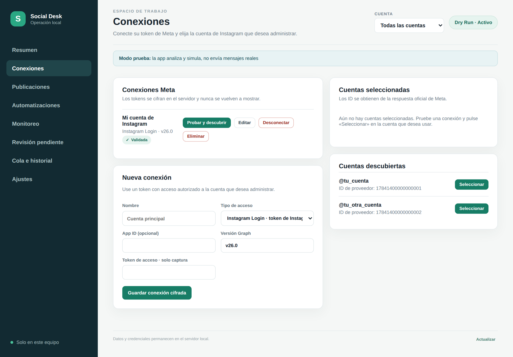
Cambiar el token, el App ID o la versión Graph anula la validación anterior y pausa el monitoreo de esa conexión hasta que la valides de nuevo. Además, antes de cada envío real, la app comprueba que el token actual siga teniendo acceso a la cuenta seleccionada.
| Botón | Qué pasa |
|---|---|
| Desconectar | La conexión deja de leer comentarios y de enviar respuestas. El historial se conserva. Pide confirmación. |
| Eliminar | La desconecta y conserva el historial, pero para usarla otra vez tendrás que crear una conexión nueva. Pide confirmación. |
Desconectar o eliminar en Social Desk no revoca el token en Meta. Si crees que tu token se filtró, quita también el acceso de la app desde la configuración de tu cuenta de Meta o genera uno nuevo (verifica en la documentación oficial de Meta cómo revocar el acceso).
En la columna derecha hay un panel llamado Retención heredada. Solo aplica si tu cuenta viene de una herramienta anterior que dejó un bloqueo o un historial de rechazos. En ese caso, la cuenta queda retenida y no puede enviar mensajes reales hasta que pulses Revisar estado y reconocer y confirmes con Reconocer historial. Si el bloqueo de la herramienta anterior sigue presente, la app no te deja reconocerlo. La app nunca borra ni modifica esos archivos externos. Si no usaste otra herramienta antes, no necesitas este panel.
Para crear una automatización específica, la app necesita conocer tus publicaciones.
@tu_cuenta. Las publicaciones se cargan de una cuenta a la vez.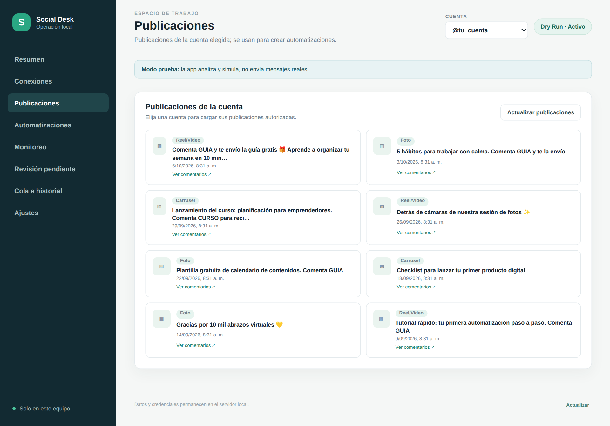
Pulsa Actualizar publicaciones cada vez que publiques algo nuevo y quieras crearle una automatización específica. Las automatizaciones generales no lo necesitan: el monitoreo actualiza la lista de publicaciones por sí mismo cada 5 minutos como máximo.
Para actualizar publicaciones, la cuenta y la conexión deben estar Validada. Si cambiaste el token, valida primero en Conexiones.
Una automatización es una regla: «si alguien comenta esta palabra en esta publicación, envíale este mensaje».
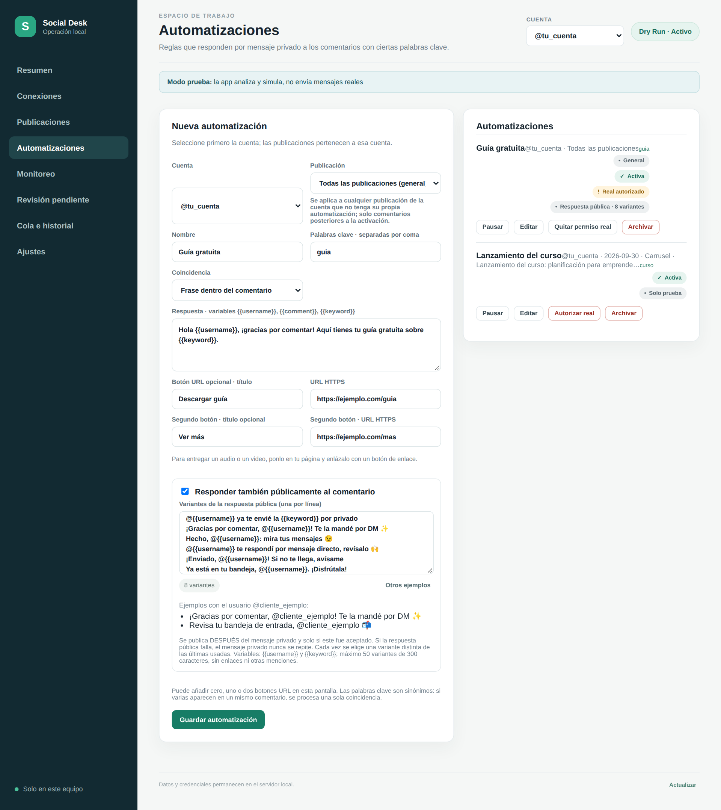
guía, ebook.Una automatización recién creada aparece como Pausada y Solo prueba. No hará nada hasta que pulses Activar, y solo responderá comentarios escritos después de activarla.
| Tipo | Alcance |
|---|---|
| Específica | Una sola publicación. |
| General (etiqueta General) | Todas las publicaciones de la cuenta, antiguas y nuevas, que no tengan su propia automatización activa. |
Regla de prioridad: si una publicación tiene su propia automatización activa, solo esa responde; la general «le cede el paso». Si la específica está pausada o archivada, la general vuelve a aplicar en esa publicación.
guía, Guia cuenta como repetida y el formulario mostrará «Revise los campos e inténtelo de nuevo.»| Modo | Cómo funciona | Ejemplo con la palabra «guía» |
|---|---|---|
| Frase dentro del comentario | La palabra o frase debe aparecer completa, como palabra separada, en cualquier parte del comentario. | «¡Quiero la guía!» sí coincide. «guiado» no coincide. |
| Comentario exacto | El comentario completo debe ser igual a la palabra clave (sin contar mayúsculas, tildes ni espacios extra). | «Guía» sí coincide. «guía por favor» o «guía!» no coinciden. |
Usa Frase dentro del comentario en casi todos los casos. La gente suele añadir signos, emojis u otras palabras, y el modo exacto no los admite.
El texto predeterminado es: Hola {{username}}, aquí tienes la información sobre {{keyword}}. Puedes cambiarlo por completo. Estas variables se reemplazan al enviar:
| Variable | Se reemplaza por |
|---|---|
{{username}} | El usuario de quien comentó. |
{{comment}} | El texto del comentario. |
{{keyword}} | La palabra clave que coincidió. |
{{account}} | El usuario de tu cuenta (tu_cuenta). |
{{media}} | El enlace de la publicación (o su identificador si no hay enlace guardado). |
{{nombre}}) se rechaza al guardar.Ejemplo de plantilla clara: ¡Hola {{username}}! Gracias por comentar. Aquí tienes la {{keyword}} que pediste. (Mensaje automático de @tu_cuenta)
https://. No se aceptan direcciones http:// ni con usuario y contraseña.Cómo se ven los botones en Instagram depende de Meta y puede variar según la versión de la app del destinatario. Pruébalo con un comentario controlado (capítulo 14).
Además del mensaje privado, la app puede responder públicamente bajo el comentario, por ejemplo «¡Listo @usuario! Te escribí por mensaje privado». Repetir el mismo texto cientos de veces parece spam, por eso escribes varias variantes y la app va rotándolas.
@cliente_ejemplo). Pulsa Otros ejemplos para ver otros.{{username}} y {{keyword}}. Se permite mencionar a la persona con @{{username}}.http://, https://, www.) y sin mencionar a otras cuentas con @.No sabrás si tu token tiene permiso para responder comentarios hasta el primer intento real. Si no lo tiene, verás en la cola «Falta el permiso para responder comentarios en esta conexión». El mensaje privado no se ve afectado. Revisa los permisos de los capítulos 4 o 5.
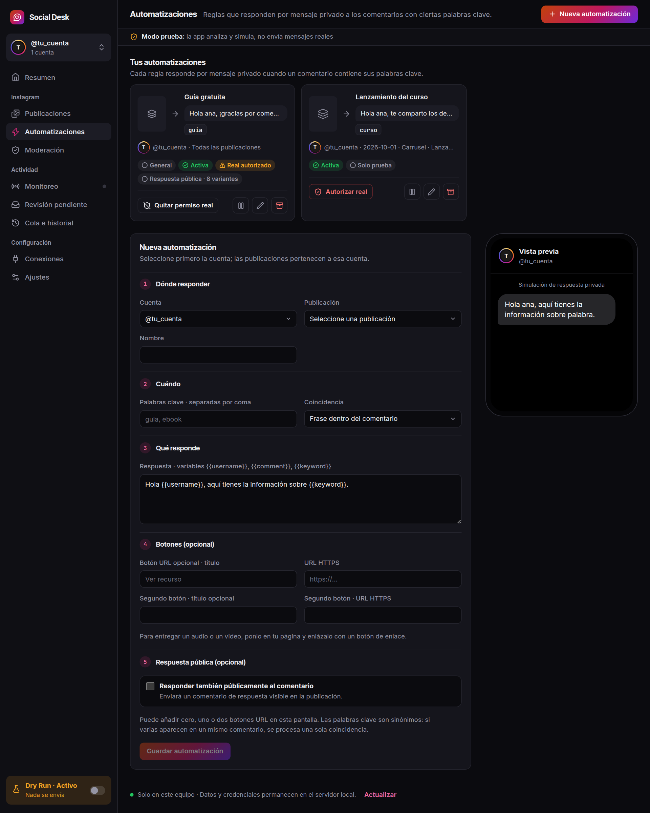
| Botón | Qué hace |
|---|---|
| Activar | Empieza a vigilar. Fija el corte desde ahora: solo cuentan comentarios posteriores. Aviso: «Automatización activada con corte desde ahora.» |
| Pausar | Deja de vigilar. Al volver a activarla, el corte se mueve otra vez al momento de activación. |
| Editar | Abre la ventana de edición (ver abajo). |
| Autorizar real | Permite que esta automatización envíe de verdad cuando el modo real global esté activo. Pide confirmación. Solo funciona si la automatización está activa y la cuenta y la conexión están validadas. |
| Quitar permiso real | La vuelve a Solo prueba. |
| Archivar | La detiene para siempre y la quita del listado. El historial se conserva. |
Una automatización archivada no se puede reactivar desde la app. Si solo quieres detenerla un tiempo, usa Pausar.
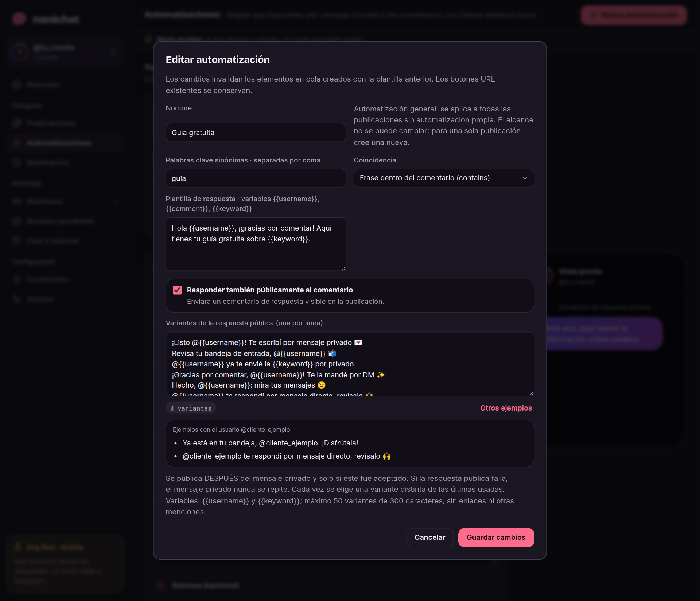
Al guardar cambios, los mensajes que estaban en cola con la plantilla anterior ya no se enviarán. Así nunca sale un mensaje con un texto que ya corregiste.
Para los comentarios que llegaron antes de activar una automatización. Analizar solo lee: nunca envía nada.
El monitoreo solo atiende comentarios nuevos. Si tu publicación ya tenía comentarios con la palabra clave, puedes revisarlos aquí y decidir, uno por uno, cuáles responder. Es un proceso en dos tiempos: analizar (solo lectura) y procesar (con confirmación).
Si el selector de cuenta está en «Todas las cuentas», el análisis revisa todas las cuentas validadas; si eliges una, solo esa.
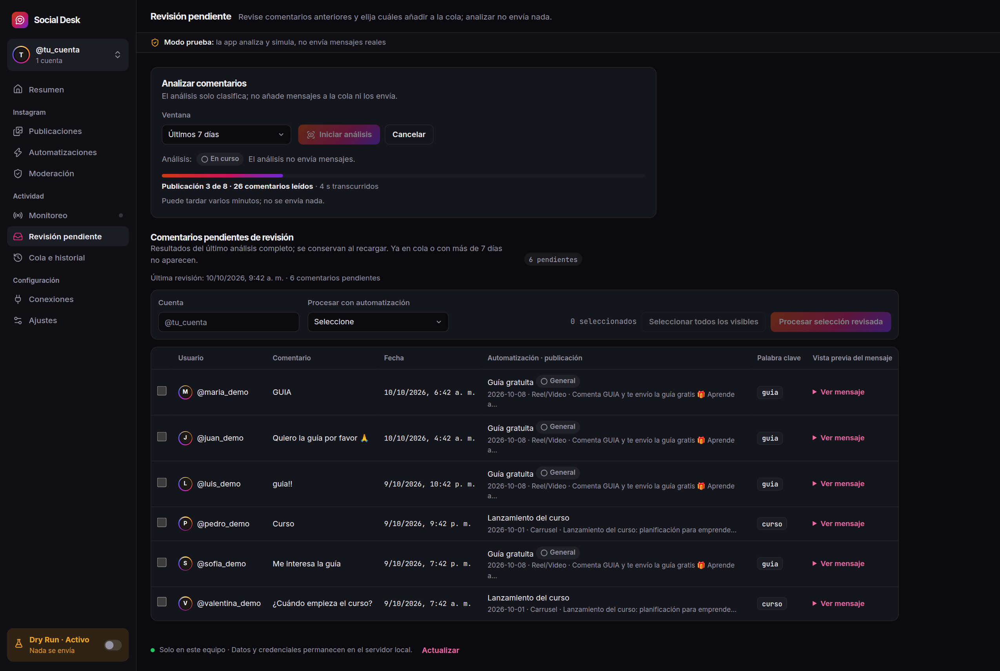
Al terminar aparece una tarjeta con el resultado. Su título puede ser «Análisis finalizado», «Análisis terminado con cobertura incompleta» o «Análisis cancelado».
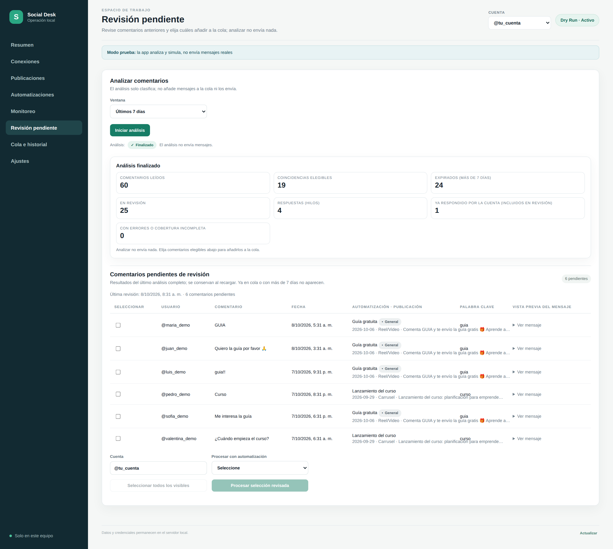
| Dato | Qué significa |
|---|---|
| Comentarios leídos | Total de comentarios que la app leyó de Meta. |
| Coincidencias elegibles | Comentarios con palabra clave que sí se pueden responder. |
| Expirados (más de 7 días) | Comentarios con más de 7 días: Meta ya no permite responderlos en privado. |
| En revisión | Comentarios con palabra clave que la app no responde por seguridad: sin autor o sin fecha, escritos por tu propia cuenta, reclamados por dos automatizaciones a la vez o ya respondidos por tu cuenta. |
| Respuestas (hilos) | Respuestas dentro de un hilo de comentarios. No se responden: solo los comentarios principales. |
| Ya respondido por la cuenta (incluidos en revisión) | Comentarios que tu cuenta ya contestó públicamente. Se excluyen para no responder dos veces. Ya están sumados en «En revisión». |
| Con errores o cobertura incompleta | Publicaciones o cuentas que no se pudieron leer completas. Si es mayor que cero, repite el análisis. |
Un análisis incompleto o cancelado no sirve para procesar. Solo los comentarios de un análisis completo aparecen en la lista para añadirlos a la cola. Si ves «cobertura incompleta», repite el análisis.
Debajo está Comentarios pendientes de revisión. Para verla debes tener una cuenta elegida (si el filtro está en «Todas las cuentas», la app te pide elegir una).
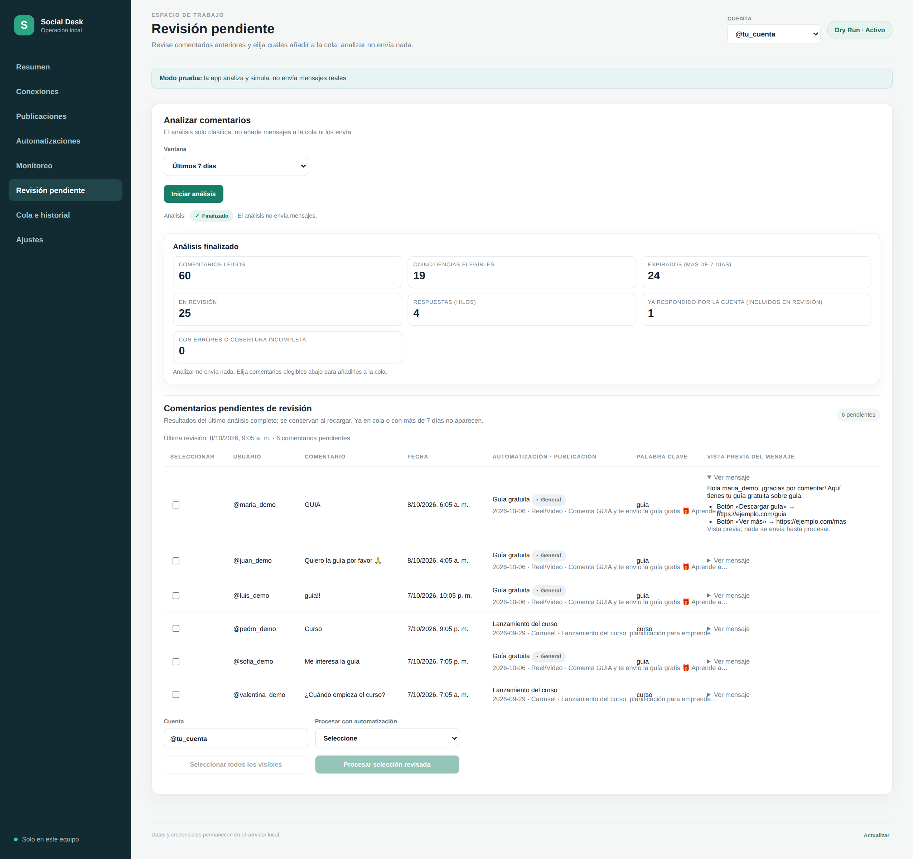
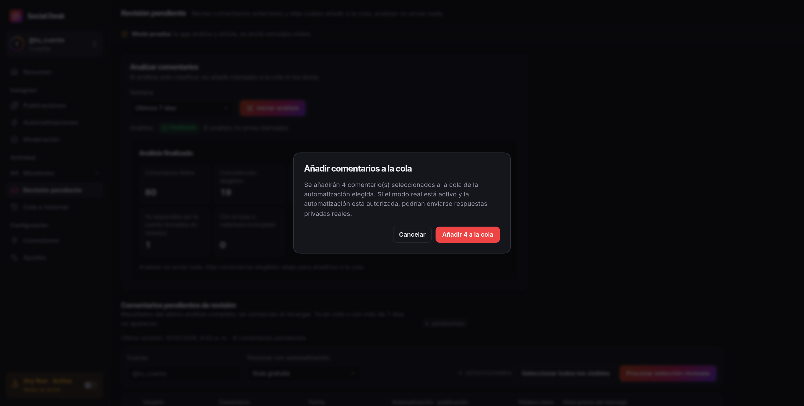
Verás «Selección explícita añadida a la cola.» y los comentarios desaparecen de la lista de pendientes.
La detección de «ya respondido por la cuenta» usa los comentarios guardados en el último análisis. Si respondiste a mano hace poco, haz un análisis nuevo justo antes de procesar.
El monitoreo es el vigilante: sin él, ninguna automatización detecta comentarios nuevos ni se envía nada.
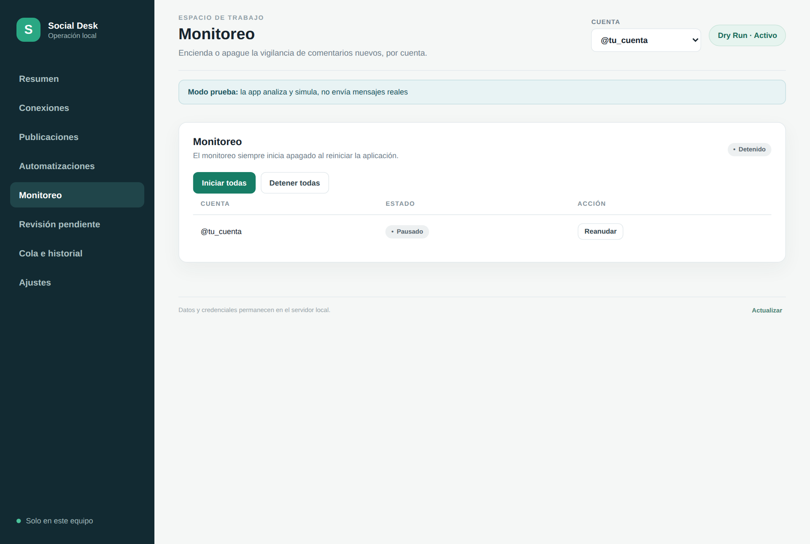
| Botón | Qué hace |
|---|---|
| Iniciar todas | Enciende el monitoreo de todas las cuentas validadas. Aviso: «Monitoreo iniciado para cuentas validadas.» |
| Detener todas | Lo apaga en todas las cuentas. Aviso: «Todo el monitoreo se detuvo.» |
| Detener (por cuenta) | Pausa solo esa cuenta. Su estado pasa a Pausado. |
| Reanudar (por cuenta) | La vuelve a En monitoreo. Solo funciona con cuentas y conexiones validadas. |
Cada vez que la app arranca, el monitoreo empieza apagado en todas las cuentas. Es una protección para que nada se envíe sin que tú lo decidas. Después de reiniciar el computador o la app, vuelve a Monitoreo y pulsa Iniciar todas.
Mientras la cobertura no llega al final de los comentarios, el resumen la muestra como parcial.
El monitoreo solo funciona mientras la app está abierta y el computador encendido y despierto. Configura tu equipo para que no entre en suspensión si quieres respuestas continuas. Si el equipo se apaga, los comentarios que lleguen mientras tanto podrán revisarse luego en Revisión pendiente, siempre dentro de los 7 días.
Aquí ves qué pasó con cada comentario: si se simuló, se envió, falló o necesita tu revisión.
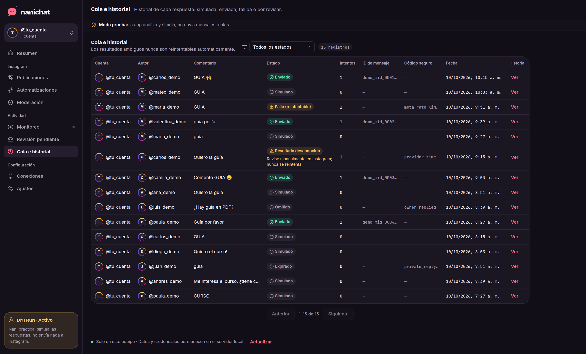
Se muestran 50 registros por página, con Anterior y Siguiente.
| Estado en pantalla | Código | Qué significa y qué hacer |
|---|---|---|
| Simulado | SIMULATED | Creado en modo prueba o por una automatización «Solo prueba». Nunca se envía, ni siquiera si luego activas el modo real. |
| En cola | QUEUED | Esperando su turno para enviarse en modo real. |
| Intención registrada / Enviando | SEND_INTENT_RECORDED / SENDING | La app anotó que iba a enviar y el envío está en curso (o se interrumpió). Normalmente dura segundos. |
| Enviado | SENT | Meta aceptó el mensaje y devolvió un ID. Puedes usar Verificar lectura. |
| Falló (reintentable) | FAILED_RETRYABLE | Meta pidió esperar (límite de velocidad) o no se pudo releer el comentario. Se reintenta solo, con esperas crecientes (máximo 15 minutos entre intentos y nunca antes de lo que Meta indique). Tras 5 intentos pasa a «Falló (definitivo)». |
| Falló (definitivo) | FAILED_PERMANENT | Meta rechazó el envío o se agotaron los reintentos. Revisa el código seguro (permisos, token, comentario borrado…). |
| Resultado desconocido | UNKNOWN_OUTCOME | No se sabe si el mensaje llegó (tiempo de espera agotado, error del servidor después de enviar, reinicio durante el envío). Nunca se reintenta, para no enviar dos veces. Revísalo a mano en Instagram. |
| Expirado | EXPIRED | El comentario superó la ventana de 7 días antes de poder enviarse. No se envía nada. |
| Omitido | SKIPPED | Justo antes de enviar, la app comprobó que ya no correspondía (por ejemplo, tu cuenta ya había respondido, o la publicación ahora tiene su propia automatización). |
El filtro de estado incluye todos menos «Intención registrada» y «Enviando», que son pasajeros.
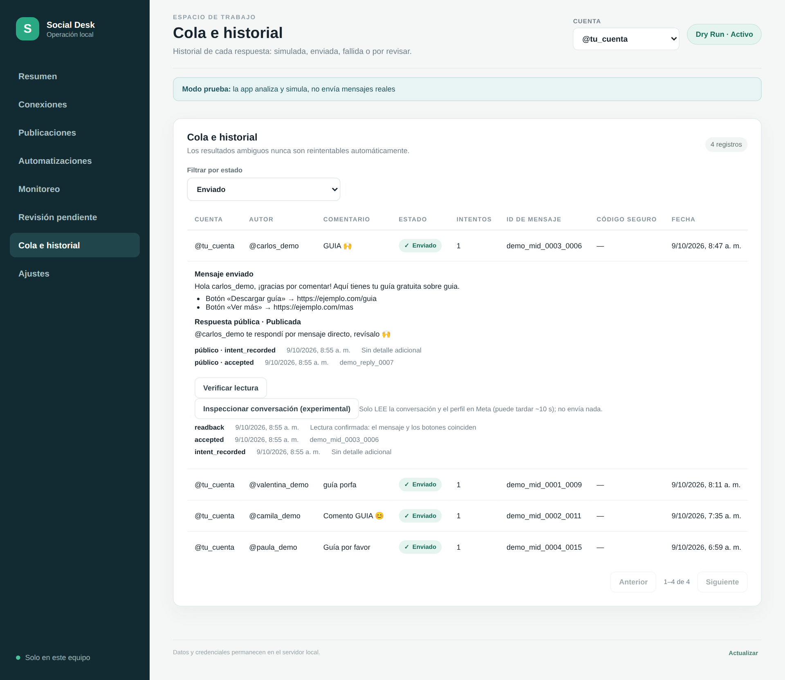
El detalle muestra:
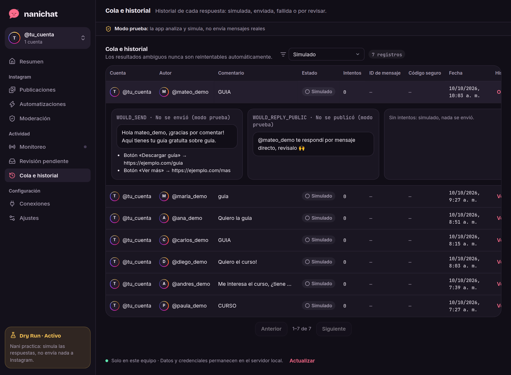
El botón Verificar lectura le pide a Meta el mensaje aceptado y lo compara con lo que se envió. No envía nada ni cambia el estado. Resultados posibles:
Cada envío aceptado ya incluye una lectura automática registrada como evento readback.
Una lectura confirmada demuestra que Meta tiene el mensaje, no cómo se ve en el teléfono de la persona ni si pulsó los botones.
Si la automatización responde también en público, el detalle muestra «Respuesta pública · estado» con el texto exacto publicado. Los estados son: Pendiente, Enviando, Publicada, Falló, Resultado desconocido, Omitida y Expirada. En modo prueba verás WOULD_REPLY_PUBLIC · No se publicó (modo prueba).
Una lista de verificación paso a paso. Hazla con calma la primera vez.
Un mensaje real solo sale cuando todos estos interruptores están encendidos a la vez:
Solo con los cuatro encendidos se envían mensajes privados reales.
Además, la cuenta no debe tener una retención de seguridad (capítulo 8) y el token debe seguir siendo válido.
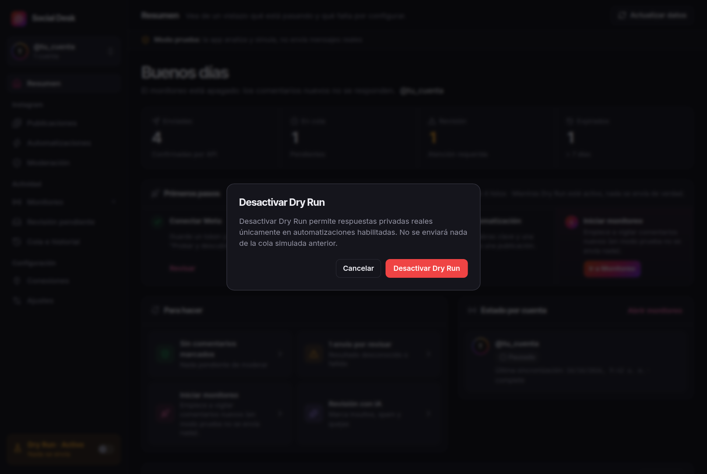
Usa el modo real primero con una sola automatización y una publicación con poco movimiento. Revisa la cola varias veces durante el primer día. Amplía solo cuando todo funcione como esperas.
Un envío que ya empezó no se puede deshacer. Volver a modo prueba evita los envíos siguientes, pero un mensaje que Meta ya aceptó queda enviado.
El modo real se conserva al reiniciar la app. Lo único que se apaga solo es el monitoreo: en cuanto lo enciendas de nuevo, los envíos reales se reanudan.
Cómo protege la app tus datos y qué te toca cuidar a ti.
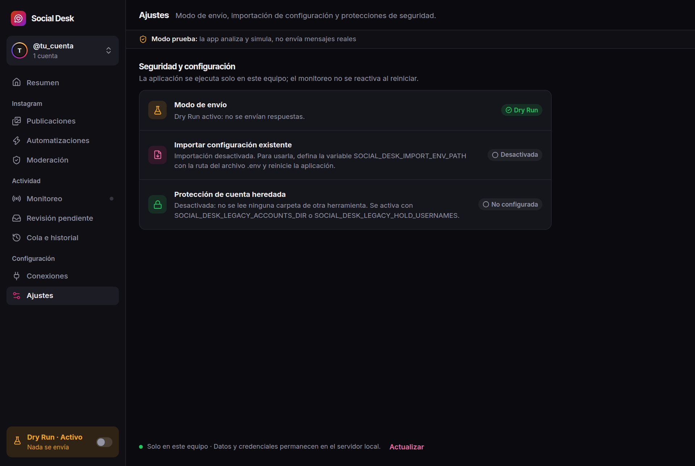
127.0.0.1) y rechaza peticiones de otros orígenes.vault.key, que vive fuera de la base de datos.data/, vault.key ni tus tokens.data/ en un lugar privado y cifrado.La app guarda en tu computador los nombres de usuario y el texto de los comentarios que analiza, y los mensajes enviados. Son datos personales de otras personas:
Envía mensajes solo a personas que los pidieron comentando tu palabra clave. Usar respuestas privadas para mensajes no solicitados va contra las políticas de Meta y puede llevar a restricciones de tu cuenta o de tu app.
Busca el síntoma en la tabla. La mayoría de problemas tiene una causa sencilla.
| Mensaje | Qué suele significar |
|---|---|
| «Revise los campos e inténtelo de nuevo.» | Algún dato del formulario no es válido: palabras clave repetidas o vacías, variable no permitida, botón sin https://, título de botón de más de 20 caracteres, variante pública con enlace, etc. |
| «La operación fue rechazada por una condición de seguridad o estado.» | La acción no está permitida en el estado actual: por ejemplo, autorizar una automatización pausada, monitorear una cuenta no validada o seleccionar una cuenta que ya pertenece a otra conexión. |
| «La solicitud local no superó la protección de origen.» | Abriste la app desde una dirección distinta. Usa http://localhost:PUERTO y recarga la página. |
| «La cuenta indicada no existe.» / «La conexión indicada no existe.» | La cuenta o conexión ya no está disponible. Pulsa Actualizar. |
| «No se pudo completar el análisis para una cuenta.» | Meta devolvió un error durante el análisis. Revisa el token y repite. |
| «Revise el estado de la cuenta y vuelva a intentarlo.» | Error genérico: casi siempre la cuenta o la conexión no está validada. |
| «Cargando datos locales…» no desaparece | La app se detuvo. Revisa la terminal y vuelve a ejecutar npm start. |
| Síntoma | Causa probable | Solución |
|---|---|---|
| La automatización está «Activa» pero no envía nada | El monitoreo está apagado (se apaga en cada reinicio), o el modo prueba está activo, o la automatización es «Solo prueba». | Revisa los cuatro interruptores del capítulo 14. Enciende el monitoreo con Iniciar todas. |
| En la cola todo sale «Simulado» | Modo prueba global activo o automatización sin autorización real. | Es lo esperado en modo prueba. Para enviar de verdad, sigue el capítulo 14. Los simulados antiguos no se envían nunca. |
| Comenté desde mi cuenta y no pasó nada | La app ignora los comentarios de la cuenta conectada. | Comenta desde otra cuenta de Instagram. |
| Un comentario antiguo no se respondió | Solo se responden comentarios posteriores a «Activar». | Usa Revisión pendiente (dentro de los 7 días). |
| «Revise los campos…» al guardar una automatización | Palabras clave repetidas (por ejemplo guía, Guia), variable desconocida o botón inválido. | Deja cada palabra una sola vez y revisa las reglas del capítulo 10. |
| No puedo pulsar «Autorizar real» | La automatización está pausada, la cuenta no está validada o tiene retención de seguridad. | Actívala primero, valida la conexión y, si aplica, reconoce la retención heredada. |
| La conexión dice «Token inválido» | Token vencido (60 días), incompleto, revocado o sin permisos. | Genera un token nuevo y pégalo con Editar. Luego Probar y descubrir y vuelve a encender el monitoreo. |
| Antes funcionaba y de repente nada se envía | Token vencido o cambiado; el monitoreo queda pausado hasta revalidar. | Valida de nuevo en Conexiones y enciende el monitoreo. |
| Respuesta pública «Falló» con «Falta el permiso para responder comentarios en esta conexión» | El token no tiene el permiso de comentarios. | Genera un token con instagram_business_manage_comments (o instagram_manage_comments). Luego usa Reintentar respuesta pública dentro de las 24 horas. |
| Estado «Resultado desconocido» | Se perdió la respuesta de Meta (red, tiempo agotado, reinicio durante el envío). | No se reintenta nunca. Revisa en Instagram si llegó (capítulo 13). |
| «Lectura confirmada, pero el contenido leído no coincide» | Meta devolvió el mensaje con otro formato o los botones no se leyeron igual. | No se reenvía nada. Revisa en Instagram cómo se ve. Si el texto se ve bien, puedes ignorarlo. |
| «No se pudo leer: … (El remitente no coincide con la cuenta)» | La lectura de Meta no coincide con tu cuenta. | Verifica que la conexión apunte a la cuenta correcta y revisa en Instagram. |
| «Falló (definitivo)» en muchos elementos | Meta rechaza el envío: permisos, comentario borrado, ya respondido por otra herramienta, o la persona no puede recibir mensajes. | Revisa el código seguro. Comprueba permisos y que ninguna otra herramienta responda esos comentarios. |
| Otra herramienta o las respuestas automáticas de Instagram respondieron primero | Meta permite un solo mensaje privado por comentario: el primero en enviarlo gana. | No uses dos herramientas sobre la misma publicación. Desactiva la otra automatización o no crees la de Social Desk ahí. |
| Muchos «Falló (reintentable)» | Límite de velocidad de Meta. | Espera: la app reintenta sola con pausas. Reduce el volumen si se repite. |
| Elementos «Expirado» | Pasaron 7 días desde el comentario antes de poder enviar. | No hay solución en la app. Mantén el monitoreo encendido o revisa pendientes con más frecuencia. |
| La app no responde en el navegador | La app está cerrada, el computador se suspendió o cambiaste de puerto. | Abre la terminal, ejecuta npm start y abre la dirección correcta. Después enciende el monitoreo. |
| Al arrancar dice que ya hay otra copia | Hay otra ventana de terminal con la app abierta. | Ciérrala con Ctrl+C o usa esa misma. |
| La app no arranca tras restaurar una copia | Falta vault.key o no corresponde a esa base de datos. | Restaura la llave correcta junto con la base de datos (capítulo 3). |
| «Probar y descubrir» no encuentra cuentas (Facebook Login) | La cuenta de Instagram no está vinculada a la página, o tu usuario no tiene tareas en la página, o faltan pages_show_list / instagram_basic. | Revisa el capítulo 5 y genera el token otra vez incluyendo la página. |
| El análisis dice «cobertura incompleta» | Meta no devolvió todas las páginas o una cuenta falló. | Repite el análisis. Solo los análisis completos se pueden procesar. |
No usa servicios en la nube: todo corre en tu computador. Meta no cobra por usar su API dentro de sus límites, pero revisa siempre sus condiciones.
Sí. Lo que importa es que la app siga ejecutándose en la terminal y el computador esté encendido. El navegador solo es la pantalla de control.
No por internet. La app solo acepta conexiones desde el mismo computador donde se ejecuta.
La app consulta a Meta cada 60 segundos (o cada 2 minutos en automatizaciones generales) y deja al menos 10 segundos entre envíos. Unos minutos de demora son normales.
No. Meta permite un solo mensaje privado por comentario, y la app nunca reenvía un mensaje ya intentado.
No. Meta solo permite respuestas privadas dentro de los 7 días posteriores al comentario.
A la bandeja de entrada si la persona sigue tu cuenta; si no, a la carpeta de Solicitudes de mensajes.
Nada. Se quedan como historial y nunca se envían.
No. Los elementos en cola con la plantilla anterior se invalidan y no se envían.
Sí: crea una conexión por token y selecciona cada cuenta. Usa el selector «Cuenta» para trabajar con una a la vez. Recuerda que, sin la revisión de Meta, solo puedes usar cuentas propias o que administras.
No tal como está. Atender cuentas de otras personas exige revisión de la app y verificación del negocio por parte de Meta (capítulo 6), y Social Desk es una herramienta local de un solo usuario.
Renueva el token (capítulos 4 y 5), pégalo con Editar, valida con Probar y descubrir y enciende el monitoreo.
No desde la app. Crea una nueva con la misma configuración.
Abre la terminal, entra a la carpeta de la app, ejecuta npm start, abre http://localhost:3000 y pulsa Iniciar todas en Monitoreo. El modo de envío (prueba o real) se conserva; el monitoreo no.
v26.0.{{username}} que la app reemplaza por un dato real al enviar.Documentación de Meta consultada para este manual (octubre de 2026) y límites conocidos de la app.
pages_messaging, función Human Agent, acceso avanzado).v26.0).| Límite | Detalle |
|---|---|
| Un solo usuario, un solo equipo | Sin cuentas ni contraseñas propias; solo accesible desde localhost. |
| Sin renovación automática de tokens | Debes renovar el token antes de que venza. |
| Revisión periódica, no instantánea | 60 s (específicas) o 2 min por publicación (generales); un envío como mínimo cada 10 s. |
| Primera página por ronda | En cada ronda se lee la primera página de comentarios; el resto se cubre gradualmente y puede quedar parcial. |
| Publicaciones | «Actualizar publicaciones» descarga la primera página que entrega Meta (hasta 100). |
| Monitoreo apagado tras reiniciar | Debes encenderlo a mano cada vez. |
| «Resultado desconocido» sin resolución en la app | Se revisa a mano en Instagram. |
| Botones no editables | Para cambiarlos, crea una automatización nueva. |
| Archivar es irreversible | No se puede reactivar desde la app. |
| «Ya respondido» según el último análisis | Una respuesta tuya posterior al último análisis no se conoce hasta el siguiente. |
| Windows | El arranque usa sintaxis de Linux/macOS; en Windows usa WSL o Git Bash. |
| Solo Instagram | Sin TikTok, sin comentarios de páginas de Facebook, sin funciones de nube ni de inteligencia artificial. |
| Revisión de Meta | Hoy no está preparada para la revisión de Meta; úsala solo con cuentas propias o que administras. |
Social Desk no está afiliada a Meta Platforms, Inc. Instagram y Facebook son marcas de sus respectivos titulares.